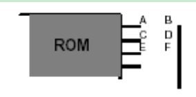
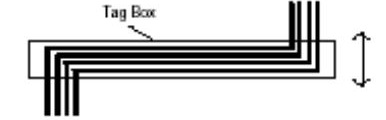

屏幕外观
整个屏幕被分成三个区域——编辑窗口（EditingWindow）、预览窗口（Overview Window）、工具箱。
编辑窗口显示你正在编辑的电路原理图，可以通过View菜单的Redraw命令来刷新显示内容，同时预览窗口中的内容也将被刷新。当执行其它命令导致显示错乱时可以使用该特性恢复显示。要使编辑窗口显示一张大的电路图的其他部分，可以通过如下几种方式：
用鼠标左键点击预览窗口中想要显示的位置，这将使编辑窗口显示以鼠标点击处为中心的内容。
在编辑窗口内移动鼠标，按下SHIFT键，用鼠标“撞击”边框，这会使显示平移。我们把这称为Shift-Pan。
用鼠标指向编辑窗口并按缩放键（F6,F7,F8），会以鼠标指针位置为中心重新显示。
缩放
按F6键可以放大电路图（连续按会不断放大直到最大），按F7键可以缩小电路图（类似的连续按会不断缩小直到最小），这两种情况无论哪种都会使显示以当前鼠标位置为中心重新显示。按F8键可以把一整张图缩放到完全显出来。图的大小可以通过View菜单的Zoom命令或者是上述的功能键控制。无论何时你都可以使用功能键
控制缩放，即便是在滚动和拖放对象时。另外，按着SHIFT键，同时在一个特定的区域用鼠标左键拖一个框，则框内的部分就会被放大，这个框可以是
在编辑窗口内拖，也可以是在预览窗口内拖。
基本的编辑工具
对象放置
ISIS支持多种类型的对象，每一类型对象的具体作用和功能将在下一章给出。虽然类型不同，但放置对象
的基本步骤都是一样的。放置对象的步骤如下（To place an object:）
- 根据对象的类别在工具箱选择相应模式的图标（mode icon）。
- 根据对象的具体类型选择子模式图标（sub-mode icon）。
- 如果对象类型是元件、端点、管脚、图形、符号或标记，从选择器里（selector）选择你想要的对象的名字。对于元件、端点、管脚和符号，可能首先需要从库中调出。
- 如果对象是有方向的，将会在预览窗口显示出来，你可以通过点击旋转和镜象图标来调整对象的朝向。
- 最后，指向编辑窗口并点击鼠标左键放置对象。对于不同的对象，确切的步骤可能略有不同，但你会发现和其它的图形编辑软件是类似的，而且很直观。
选中对象
用鼠标指向对象并点击右键可以选中该对象。该操作选中对象并使其高亮显示，然后可以进行编辑。
- 选中对象时该对象上的所有连线同时被选中。
- 要选中一组对象，可以通过依次在每个对象右击选中每个对象的方式。也可以通过右键拖出一个选择框
的方式，但只有完全位于选择框内的对象才可以被选中。 - 在空白处点击鼠标右键可以取消所有对象的选择。
删除对象
用鼠标指向选中的对象并点击右键可以删除该对象，同时删除该对象的所有连线。
拖动对象
用鼠标指向选中的对象并用左键拖曳可以拖动该对象。该方式不仅对整个对象有效，而且对对象中单独的labels也有效。
- 如果Wire Auto Router功能被使能的话，被拖动对象上所有的连线将会重新排布或者’fixed up’。这将花
费一定的时间（10秒左右），尤其在对象有很多连线的情况下，这时鼠标指针将显示为一个沙漏。 - 如果你误拖动一个对象，所有的连线都变成了一团糟，你可以使用Undo命令撤消操作恢复原来的状态。
拖动对象标签
许多类型的对象有一个或多个属性标签附着。例如，每个元件有一个“reference”标签和一个“value”标签。可以很容易地移动这些标签使你的电路图看起来更美观。
移动标签的步骤如下:
- 选中对象
- 用鼠标指向标签，按下鼠标左键。
- 拖动标签到你需要的位置。如果想要定位的更精确的话，可以在拖动是改变捕捉的精度（使用F4、F3、F2、CTRL+F1键）。
调整对象大小
子电路（Sub-circuits）、 图表、 线、 框和圆可以调整大小。 当你选中这些对象时， 对象周围会出现白色
小方块叫做“手柄” ， 可以通过拖动这些“手柄” 来调整对象的大小。
调整对象的朝向
许多类型的对象可以调整朝向为0, 90, 270， 360或通过x轴y轴镜象。 当该类型对象被选中后，
“Rotation and Mirror “图标会从兰色变为红色， 然后就可以来改变对象的朝向。
编辑对象
许多对象具有图形或文本属性， 这些属性可以通过一个对话框进行编辑， 这是一中很常见的操作， 有多种实现方式。
编辑单个对象的步骤是：
- 选中对象
2.、 用鼠标左键点击对象。
连续编辑多个对象的步骤是
- 选择Main Mode图标， 再选择Instant Edit图标。
- 依次用鼠标左键点击各个对象
以特定的编辑模式编辑对象的步骤是：
- 指向对象
- 使用键盘CTRL+’E
对于文本脚本来说， 这将启动外部的文本编辑器。 如果鼠标没有指向任何对象的话， 该命令将对当前的图进行编辑。
通过元件的名称编辑元件的步骤如下：
- 键入’E’
- 在弹出的对话框中输入元件的名称。
确定后将会弹出该项目中任何元件的编辑对话框， 并非只限于当前sheet的元件。 编辑完后， 画面将会以
该元件为中心重新显示。 你可以通过该方式来定位一个元件， 即便你并不想对其进行编辑。
拷贝所有选中的对象
拷贝一整块电路的方式
- 选中需要的对象。
- 用鼠标左键点击Copy图标。
- 把拷贝的轮廓拖到需要的位置， 点击鼠标左键放置拷贝。
- 重复步骤[3]放置多个拷贝。
- 点击鼠标右键结束.
当一组元件被拷贝后， 他们的标注自动重置为随机态， 用来为下一步的自动标注做准备， 防止出现重复的元件标注。
移动所有选中的对象
移动一组对象的步骤是
- 选中需要的对象， 具体的方式参照上文的Tagging an Object部分。
- 把轮廓拖到需要的位置， 点击鼠标左键放置。
你可以使用块移动的方式来移动一组导线， 而不移动任何对象。
删除所有选中的对象
1、 选中需要的对象。
2、 用鼠标左键点击Delete图标。
如果错误删除了对象， 可以使用Undo命令来恢复原状。
画线（ WIRING UP）
你一定发现没有画线的图标按钮。 这是因为ISIS的智能化足以在你想要画线的时候进行自动检测。 这就省去了选择画线模式的麻烦。
在两个对象间连线
- 左击第一个对象连接点。
- 如果你想让ISIS自动定出走线路径， 只需左击另一个连接点。 另一方面， 如果你想自己决定走线路径， 只需在想要拐点处点击鼠标左键。
一个连接点可以精确的连到一根线。 在元件和终端的管脚末端都有连接点。 一个圆点从中心出发有四个连接点，可以连四根线。
由于一般都希望能连接到现有的线上， ISIS也将线视作连续的连接点。 此外， 一个连接点意味着3根线汇于一点，ISIS提供了一个圆点， 避免由于错漏点而引起的混乱。
线路自动路径器
线路自动路径器(WAR)为你省去了必须标明每根线具体路径的麻烦。 该功能默认是打开的， 但可通过两种途径方式略过该功能。
如果你只是在两个连接点左击， WAR将选择一个合适的线径。 但如果你点了一个连接点， 然后点一个或几个非连接点的位置， ISIS将认为你在手工定线的路径， 将会让你点击线的路径的每个角。 路径是是通过左击另一个连接点来完成的。
WAR可通过使用工具菜单里的WAR命令来关闭。 这功能在你想在两个连接点间直接定出对角线时是很有用的。
重复布线
假设你要连接一个8字节ROM数据总线到电路图主要数据总线， 你已将ROM， 总线和总线插入点如以下放置。
首先左击A， 然后左击B， 在AB间画一根水平线。 双击C， 重复布线功能会被激活， 自动在CD间布线。 双击E、F， 以下类同。
重复布线完全复制了上一根线的路径。 如果上一根线已经是自动重复布线将仍旧自动复制该路径。 另一方面，如果上一根线为手工布线， 那么将精确复制用于新的线。

移动线段或线段组
